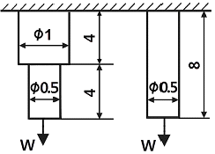
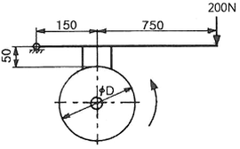
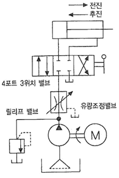
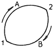
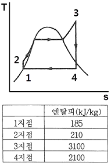
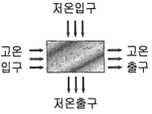
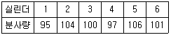
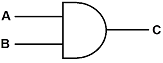

자동차정비기사 (2017-05-07 기출문제)
1과목: 일반기계공학
1. 그림과 같이 2개의 연강봉에 같은 인장하중을 받을 때, 각 봉의 탄성변형에너지비 V1 : V2는? (단, 그림에서 길이 단위는 ㎜이고, 왼쪽봉의 탄성변형에너지가 V1, 오른쪽 봉의 탄성변형에너지가 V2이다.)

- 3 : 8
- 5 : 8
- 8 : 3
- 8 : 5
(정답률: 40%)

2. 다음 중 가장 큰 회전력을 전달시킬 수 있는 키는?
- 납작키(flat key)
- 둥근 키(round key)
- 안장 키(saddle key)
- 접선 키(tangential key)
(정답률: 61%)
3. 합성수지에 대한 일반적인 설명으로 틀린 것은?
- 내화성 및 내열성이 좋지 않다.
- 가공성이 좋고 성형이 간단하다.
- 투명한 것이 있으며 착색이 자유롭다
- 비중 대비 강도 및 강성이 낮은 편이다.
(정답률: 65%)
4. 유효지름 38㎜, 피치 8㎜, 접촉부 마찰계수가 0.1인 1줄 사각나사의 효율은 약 몇 %인가?
- 21.4
- 27.7
- 39.8
- 44.2
(정답률: 37%)
5. 그림과 같은 드럼에서 75N·m의 토크가 작용하고 있는 경우, 레버 끝에서 200N의 힘을 가하여 제동하려면 이 드럼의 지름은 약 몇 ㎜이어야 하는 가? (단, 브레이크 블록과 드럼사이의 마찰계수(μ)는 0.2이고, 그림에서 길이 단위는 ㎜이다.)

- 475
- 526
- 584
- 615
(정답률: 37%)
6. 불활성 가스를 사용하는 용접법은?
- 심용접
- 마찰 용접
- TIG 용접
- 초음파 용접
(정답률: 72%)
7. 밀폐된 용기 안에서 유체에 작용하는 압력이 모든 방향으로 동일하게 작용 되는 원리는?
- 파스칼의 원리
- 베르누이의 원리
- 오리피스의 원리
- 보일-샤를의 원리
(정답률: 73%)
8. 중실축에 가해지는 토크가 T이고, 축 지름이 d일 때 이 축에 발생하는 최대 전단응력을 나타내는 식은?
- Tmax = 32T/(πd3)
- Tmax = 16T/(πd3)
- Tmax = T/(πd3)
- Tmax = T/(16πd3)
(정답률: 41%)
9. 동일재료의 축 A, B의 길이는 동일하고 지름이 각각 d, 2d일 경우 같은 각도만큼 비틀림 변형 시키는데 필요한 비틀림 모멘트 비 TA/TB의 값은?
- 1/2
- 1/4
- 1/8
- 1/16
(정답률: 46%)
10. 합금 주철에 포함된 각 합금 원소의 설명으로 틀린 것은?
- Ti은 강한 탈산제 역할을 한다.
- Mo은 흑연화 촉진제 역할을 한다.
- Cr은 흑연화를 방지하고, 탄화물을 안정시킨다.
- Ni은 흑연화를 촉진하고, 두꺼운 주물 부분의 조직이 거칠어지는 것을 방지한다.
(정답률: 58%)
11. 다음 중 커넥팅 로드와 같이 형상이 복잡한 것을 소성 가공하는 방법으로 가장 적합한 것은?
- 압연(rolling)
- 인발(drawing)
- 전조(roll forming)
- 형단조(die forging)
(정답률: 75%)
12. 체인 전동장치의 일반적인 특징으로 틀린 것은?
- 윤활이 필요하다.
- 진동과 소음이 거의 없다.
- 전동효율이 95% 이상으로 좋다.
- 미끄럼이 없는 일정한 속도비를 얻을 수 있다.
(정답률: 65%)
13. 다음 그림에서 나타내는 유압 회로도의 명칭은?

- 시퀀스 회로
- 미터 인 회로
- 브레이크 회로
- 미터 아웃 회로
(정답률: 75%)
14. 절삭 가공 시 구성인선(built up edge)을 방지하기 위한 대책으로 틀린 것은?
- 경사각(rake angle)을 작게 할 것.
- 절삭 깊이(cut of depth)를 작게 할 것.
- 절삭 속도(cutting speed)를 크게 할 것.
- 공구의 인선(cutting edge)을 예리하게 랄 것
(정답률: 54%)
15. 다음 중 안전율을 가장 올바르게 나타낸 것 은?
- 기준강도/허용응력
- 인장강도/항복응력
- 허용강도/인장응력
- 항복응력/인장강도
(정답률: 53%)
16. 30000N·㎜의 비틀림 모멘트와 20000 N·㎜의 굽힘 모멘트를 동시에 받는 축의 상당 굽힘 모멘트는 약 몇 N·㎜인가?
- 8027
- 14028
- 28027
- 56⑤4
(정답률: 33%)
17. 다음 중 육면체의 평행도나 원통의 진원도 측정에 가장 적합한 측정기는?
- 각도 게이지
- 다이얼 게이지
- 하이트 게이지
- 버니어 캘리퍼스
(정답률: 72%)
18. 유압펌프의 종류 중 용적형 펌프가 아닌 것은?
- 기어 펌프
- 베인 펌프
- 축류 펌프
- 회전피스톤 펌프
(정답률: 50%)
19. 알루미늄에 Cu, Mg, Mn을 첨가한 합금으로 경량이면서 담금질 시효경과 처리에 의해 강과 같은 높은 강도를 가진 것은?
- 두랄루민
- 바이메탈
- 하이드로날륨
- 엘린바
(정답률: 74%)
20. 주조할 때 금형에 접촉된 표면을 급랭시켜 표면은 백선화되어 단단한 층이 형성되고, 금속의 내부는 서냉되어 강인한 성질의 주철이 되는 것은?
- 회주철
- 칠드 주철
- 가단주철
- 구상흑연 주철
(정답률: 64%)
2과목: 기계열역학
21. 그림과 같이 상태 1, 2 사이에서 계가 1→A→2→B→1과 같은 사이클을 이루고 있을 때, 열역학 제1법칙에 가장 적합한 표현은? (단, 여기서 Q는 열량, W는 계가 하는 일, U는 내부에너지를 나타낸다.)

- dU = δQ＋δW
- ∆U = Q－W
- ∮δQ = ∮δW
- ∮δQ = ∮δU
(정답률: 60%)
22. 다음 중 정확하게 표기된 SI 기본단위 (7가지)의 개수가 가장 많은 것은? (단, SI 유도단위 및 그 외 단위는 제외한다.)
- A, Cd, ℃, Kg, m, Mol, N, s
- cd, J, K, kg, m, Mol, Pa, s
- A, J, ℃, kg, km, mol, S, W
- K, kg, km, mol, N, Pa, S, W
(정답률: 62%)
23. 다음 온도에 관한 설명 중 틀린 것은?
- 온도는 뜨겁거나 차가운 정도를 나타낸다.
- 열역학 제0법칙은 온도 측정과 관계된 법칙이다.
- 섭씨온도는 표준기압 하에서 물의 어는점과 끓는점을 각각 0과 100으로 부여한 온도 척도이다.
- 화씨온도 F와 절대온도 K사이에는 K=F＋273.15의 관계가 성립한다.
(정답률: 60%)
24. 압력이 일정할 때 공기 5kg을 0℃에서 100℃까지 가열하는데 필요한 열량은 약 몇 kJ인가? (단, 비열(Cp)은 온도T(℃)에 관계한 함수로 Cp(kJ/(kg·℃))=1.01＋0.000079×T이다.)
- 365
- 436
- 480
- 507
(정답률: 56%)
25. 온도 15℃, 압력 100kPa 상태의 체적이 일정한 용기 안에 어떤 이상 기체 5kg이 들어있다. 이 엔트로피 증가량은 약 몇 kJ/K인가?(오류 신고가 접수된 문제입니다. 반드시 정답과 해설을 확인하시기 바랍니다.)
- 0.411
- 0.486
- 0.575
- 0.732
(정답률: 29%)
26. 저열원 20℃와 고열원 700℃ 사이에서 작동하는 카르노 열기관의 열효율은약 몇 %인가?
- 30.1%
- 69.9%
- 52.9%
- 74.1%
(정답률: 53%)
27. 압력이 10⁶N/m2, 체적이 1m2인 공기가 압력이 일정한 상태에서 400kJ의 일을 하였다. 변화 후의 체적은 약 몇 m3인가?
- 1.4
- 1.0
- 0.6
- 0.4
(정답률: 37%)
28. 8℃의 이상기체를 가역단열 압축하여 그 체적을 1/5로 하였을 때 기체의 온도는 약 몇 ℃인가? (단, 이 기체의 비열비는 1.4이다.)
- -125℃
- 294℃
- 222℃
- 262℃
(정답률: 42%)
29. 보일러 입구의 압력이 9800kN/m 일 때 펌프가 수행한 일은 약 몇 kJ/kg인가? (단, 물의 비체적은 0.001m3/kg이다.)
- 9.79
- 15.17
- 87.25
- 180.52
(정답률: 56%)
30. 10kg의 증기가 온도 50℃, 압력 38kPa, 체적 7.5m3일 때 총 내부에너지는 6700kJ이다. 이와 같은 상태의 증기가 가지고 있는 엔탈피는 약 몇 kJ인가?
- 606
- 1794
- 33⑤
- 6985
(정답률: 42%)
31. 다음 중 비가역 과정으로 볼 수 없는 것은?
- 마찰 현상
- 낮은 압력으로의 자유 팽창
- 등온 열전달
- 상이한 조성물질의 혼합
(정답률: 53%)
32. 오토(Otto) 사이클에 관한 일반적인 설명 중 틀린 것은?
- 불꽃 점화 기관의 공기 표준 사이클이다.
- 연소과정을 정적 가열과정으로 간주한다.
- 압축비가 클수록 효율이 높다.
- 효율은 작업기체의 종류와 무관하다.
(정답률: 53%)
33. 역 Carnot cycle로 300K와 240K 사이에서 작동하고 있는 냉동기가 있다. 이 냉동기의 성능계수는?
- 3
- 4
- 5
- 6
(정답률: 43%)
34. 그림의 랭킨 사이클 (온도 (T) -엔트로피(s) 선도)에서 각각의 지점에서 엔탈피는 표와 같을 때 이 사이클의 효율은 약 몇 %인가?(오류 신고가 접수된 문제입니다. 반드시 정답과 해설을 확인하시기 바랍니다.)

- 33.7%
- 28.4%
- 25.2%
- 22.9%
(정답률: 42%)
35. 출력 10000kW의 터빈 플랜트의 시간당 연료소비량이 5000kg/h이다. 이 플랜트의 열효율은 약 몇 %인가? (단, 연료의 발열량은 33440kJ/kg이다.)
- 25.4%
- 21.5%
- 10.9%
- 40.8%
(정답률: 38%)
36. 100kPa, 25℃ 상태의 공기가 있다. 이 공기의 엔탈피가 298.615kJ/kg이라면 내부에너지는 약 몇 kJ/kg인가? (단, 공기는 분자량 28.97인 이상기체로 가정한다.)
- 213.⑤kJ/kg
- 241.07kJ/kg
- 298.15kJ/kg
- 383.72kJ/kg
(정답률: 30%)
37. 열역학 제2법칙과 관련된 설명으로 옳지 않은 것은?
- 열효율이 100%인 열기관은 없다.
- 저온 물체에서 고온 물체로 열은 자연적으로 전달되지 않는다.
- 폐쇄계와 그 주변계가 열교환이 일어날 경우 폐쇄계와 주변계 각각의 엔트로피는 모두 상승한다.
- 동일한 온도 범위에서 작동되는 가역 열기관은 비가역 열기관보다 열효율이 높다.
(정답률: 43%)
38. 열교환기를 흐름 배열(flow arrangement)에 따라 분류할 때 그림과 같은 형식은?

- 평행류
- 대향류
- 병행류
- 직교류
(정답률: 61%)
39. 어느 증기터빈에 0.4kg/s로 증기가 공급되어 260kW의 출력을 낸다. 입구의 증기 엔탈피 및 속도는 각각 3000kJ/kg ,720m/s, 출구의 증기 엔탈피 및 속도는 각각 2500kJ/kg, 120m/s이면, 이 터빈의 열손실은 약 몇 kW가 되는가?
- 15.9
- 40.8
- 20.0
- 104
(정답률: 48%)
40. 밀폐계에서 기체의 압력이 100kPa으로 일정하게 유지되면서 체적이 1m3에서 2m3으로 증가되었을 때 옳은 설명은?
- 밀폐계의 에너지 변화는 없다.
- 외부로 행한 일은 100kJ이다.
- 기체가 이상기체라면 온도가 일정하다.
- 기체가 받은 열은 100kJ이다.
(정답률: 46%)
3과목: 자동차기관
41. 차량이 800m의 언덕길을 올라가는데 6분, 내려오는데 2분이 소요되었고 0.3ℓ의 연료가 소비되었다. 내려올 때의 연료소비율이 8km/ℓ이었다면 올라갈 때의 연료소비율은 얼마인가?
- 2 ㎞/ℓ
- 4 ㎞/ℓ
- 6 ㎞/ℓ
- 8 ㎞/ℓ
(정답률: 44%)
42. 전자제어 가솔린엔진의 연료장치에서 연료압력이 낮은 원인으로 틀린 것은?
- 연료 필터 막힘
- 연료 리턴호스 막힘
- 연료 펌프 압력 누설
- 연료 공급파이프 누설
(정답률: 71%)
43. 공기유량 센서 중에서 흡입공기의 질량 유량을 계측하는 방식으로 옳은 것은?
- 베인 방식
- 맵센서 방식
- 핫필름 방식
- 칼만와류 방식
(정답률: 57%)
44. 디젤엔진의 노크 발생에 영향을 미치는 항목으로 짝지어진 것은?
- 압축비, 연료의 휘발성, 옥탄가
- 연료의 착화성, 압축비, 분사시기
- 연료의 착화성, 연료분사량, 옥탄가
- 연료의 휘발성, 배기구 형상, 연소실벽 온도
(정답률: 79%)
45. 연료계의 작동원리에 관한 설명으로 옳은 것은?
- 뜨개가 연료의 증감에 따라 움직이면 저항의 변화로 인해 연료게이지가 작동된다.
- 연료의 양에 따라 압력이 변동하면 서미스터 저항의 변화로 연료게이지가 작동된다.
- 뜨개가 연료의 증감에 따라 움직이면 연료의 압력 변화로 인해 연료게이 지가 작동된다.
- 뜨개가 연료의 증감에 따라 움직이면 링크의 움직임으로 직접 연료게이지 바늘이 작동된다.
(정답률: 61%)
46. 전자제어 가솔린엔진에서 공기 유량센서가 불량일 경우 예상되는 증상으로 틀린 것은?
- 연료펌프가 작동하지 않는다.
- 엔진 경고등이 점등 될 수 있다.
- 가속이 늦거나 엔진부조가 발생할 수 있다.
- 가속페달을 밟거나 뗄 때 시동이 꺼질 수 있다.
(정답률: 78%)
47. DOHC엔진에서 밸브 가이드에 대한 설명으로 틀린 것은?
- 배기밸브 가이드는 오일이 재순환하도록 안내 역할을 한다.
- 흡기 밸브 가이드의 마모가 심하면 연소실로 오일이 유입된다.
- 손상된 밸브 가이드는 교환 후 스템과 가이드간의 간극을 규정값으로 리밍 하여야 한다.
- 흡기 밸브의 가이드 마모 시 흡기 다기관의 압력과 헤드커버 내의 압력 편차로 인해 흡기 밸브 가이드로 오일유입이 가중된다.
(정답률: 67%)
48. 커먼레일 디젤엔진에서 스로틀 플랩을 제어하기 위한 신호로 틀린 것은?
- 엔진 회전속도
- 냉각수 온도
- 배기 온도
- 흡기 온도
(정답률: 72%)
49. 캐니스터에 포집된 연료증발가스를 조절하는 장치는?
- PCSV(purge control solenoid valve)
- PCV(positive crankcase ventilation)
- EGR(exhaust gas recirculation)
- ACV(air control valve)
(정답률: 82%)
50. 크랭크축의 기능으로 틀린 것은?
- 엔진의 좌·우 진동을 감소시킨다.
- 커넥팅로드에서 전달되는 힘을 회전모멘트로 변화시킨다.
- 동력행정 이외의 행정 시에는 역으로 피스톤에 운동을 전달한다.
- 회전모멘트의 일부를 이용하여 오일펌프, 밸브기구, 발전기 등을 구동시킨다.
(정답률: 73%)
51. 전자제어 가솔린엔진의 연료장치에서 인젝터 유효 분사시간에 대한 설명으로 옳은 것은?
- 전류가 가해지고 나서 인젝터가 닫힐 때까지 소요된 총시간
- 인젝터에 전류가 가해지고 나서 분사하기 직전까지 소요된 시간
- 전체 분사시간 중 인젝터 니들이 완전히 열릴 때 까지 도달하는데 걸린 시간을 뺀 나머지 시간
- 인젝터에 가해진 분사시간이 끝난 후 인젝터 자력선이 완전히 사라질 때까지 걸리는 시간
(정답률: 72%)
52. [표]는 디젤엔진의 전부하 운전에서 분사량을 시험한 결과이다. 수정해야할 실린더는?

- 3, 4, 5
- 1, 2, 4, 5
- 1, 2, 3, 4, 5
- 1, 2, 3, 4, 5, 6
(정답률: 67%)
53. 디젤 사이클의 이론 열효율에 대한 내용으로 옳은 것은? (단, 비열비는 일정, 압축비 : ε, 차단비 : σ)
- ε이 커질수록 열효율은 감소한다.
- ε이 일정할 때 σ가 커질수록 열효율은 크게 된다.
- ε이 일정할 때 σ가 작을수록 열효율은 크게 된다.
- ε이 작아지고 σ가 커질수록 열효율은 크게 된다.
(정답률: 66%)
54. 실린더 헤드 개스킷의 구비조건으로 틀린 것은?
- 기밀성과 유밀성의 성능이 클 것
- 엔진오일이 누출되지 않을 것
- 내열성과 내압성이 작을 것
- 냉각수가 누출되지 않을 것
(정답률: 80%)
55. LPG엔진의 믹서장치에서 겨울철 냉간 시동 시 부족한 연료를 공급하여 시동을 원활하게 해주는 밸브로 옳은 것은?
- 스타트 솔레노이드 밸브
- 피드백 솔레노이드 밸브
- 연료차단 솔레노이드 밸브
- 아이들 업 솔레노이드 밸브
(정답률: 71%)
56. 오토사이클의 이론열효율에 대한 설명으로 틀린 것은?
- 압축비가 증가하면 열효율이 증가한다.
- 단열비가 증가하면 열효율이 증가한다.
- 가열 열량은 열효율에 영향을 미치지 않는다.
- 등압 팽창비가 1이상이면 열효율은 증가한다.
(정답률: 29%)
57. 디젤엔진의 연소실 구비 조건으로 틀린 것은?
- 고속회전 시 연소 상태가 좋을 것
- 평균유효압력이 낮을 것
- 연료소비율이 낮을 것
- 노크가 적을 것
(정답률: 82%)
58. EGR 시스템의 설명으로 틀린 것은?
- NOx 저감 효과가 있다.
- 연소실의 온도를 낮추는 효과가 있다.
- EGR 밸브가 열렸을 때 외부 흡입공기량이 증가한다.
- 배기다기관과 흡기다기관 사이의 배기가스 재순환 통로에 EGR 밸브가 설치된다.
(정답률: 70%)
59. 부동액이 갖추어야 할 구비조건으로 틀린 것은?
- 냉각수와 잘 혼합될 것
- 냉각장치에서 순환성이 좋을 것
- 냉각계통에 부식을 일으키지 않을 것
- 온도변화에 따라 화학적 변화가 잘 일어날 것
(정답률: 85%)
60. 인젝터의 기본 분사시간을 결정하기 위한 센서는?
- 산소 센서
- 대기압 센서
- 공기유량 센서
- 공기온도 센서
(정답률: 75%)
4과목: 자동차새시
61. 수동변속기에서 기어의 물림 시 2중 물림 방지 기구는 어디에 설치되어 있는가?
- 기어와 기어 사이
- 싱크로메시 기구 내
- 슬리브와 허브 사이
- 변속 시프트 축 사이
(정답률: 63%)
62. 유압식 제동장치에서 제동 시 차체가 한쪽으로 쏠리는 원인으로 거리가 먼 것은?
- 허브 베어링의 풀림
- 앞바퀴의 정렬 불량
- 마스터 실린더 리턴 포트 막힘
- 양쪽 바퀴의 공기압이 서로 다름
(정답률: 72%)
63. 듀얼 클러치 변속기의 특징으로 틀린 것은?
- 연료소비효율이 좋다.
- 자동변속기의 편리성을 갖추고 있다.
- 수동변속기와 자동변속기의 장점을 조합한 변속기이다.
- 자동변속기의 원리를 기반으로 전자제어 기능을 추가한 형식이다.
(정답률: 72%)
64. 전자식 케이블타입 주차브레이크(electronic parking brake)의 구성품 중 케이블의 장력을 측정하여 자동차이 조건 및 경사도에 따라 적절한 제동력이 가해지도록 하는 것은?
- TCU
- EPB 스위치
- 제동력 감지센서
- 주차 케이블 구동기어
(정답률: 47%)
65. 무단자동변속기 (CVT)의 특징으로 틀린 것은?
- 변속 시 충격이 거의 없다.
- 큰 동력 전달에 적합하도록 대형이다.
- 운전 중 용이하게 감속비를 변화시킬 수 있다.
- 벨트의 미끄러짐이 있을 경우 확실한 변속이 어렵다.
(정답률: 74%)
66. ABS 장치에서 고장이 발생하여 경고등이 점등 되었을 때 제동관계 장치들의 작동상태에 대한 설명으로 옳은 것은?
- ABS가 고장 나더라도 일반 제동은 가능하게 함
- ABS가 고장 나더라도 EBD는 정상 작동되게 함
- 시동 후 일정시간만 경고등을 점등하게 함
- 유압회로가 누유 되지 않도록 차단
(정답률: 80%)
67. 자동차에 적용된 차체 자세제어장치의 제어 항목이 아닌 것은?
- 구동력 제어 (TCS)
- 전자 제동력 분재 제어 (EBD)
- 전자제어 동력 조향 제어 (EPS)
- 바퀴 잠김 방지 제동 제어 (ABS)
(정답률: 44%)
68. 자동차의 진동에 관련된 설명으로 틀린 것은?
- 현가 스프링 위·아래 질량의 진동은 자동차의 승차감에 영향을 준다.
- 자동차의 진동은 현가 스프링, 타이어 조합, 엔진지지 조합 등에서 발생한 다.
- 진동이란 물체가 일정한 시간마다 동일한 운동으로 흔들리며 움직이는 현상이다.
- 진동수란 단위 시간마다 불규칙 상태를 되풀이 하는 것으로 단위가 dB이 다.
(정답률: 75%)
69. 유압식 동력 조향장치에서 오일 리저버 탱크에 공기가 혼입되는 원인으로 옳은 것은?
- 유압회로의 라인에서 오일 누설
- 파워스티어링 기어박스의 불량
- 오일펌프 구동벨트의 슬립
- 오일 순환 통로의 막힘
(정답률: 70%)
70. 전자제어 현가장치 (ESC)에서 가능한 제어 기능이 아닌 것은?
- Anti - dive 제어
- Anti - squat 제어
- Anti - rolling 제어
- Anti - slip 제어
(정답률: 80%)
71. 축거가 2.6m이고 바깥쪽 전륜의 조향각이 30°, 바퀴 접지면 중심과 킹핀과의 거리가 25㎝인 차량의 최소회전반경은 약 몇 m인가?
- 4.25
- 5.45
- 6.45
- 8.25
(정답률: 58%)
72. 자동변속기차량에서 킥다운(kick - down)에 대한 설명으로 옳은 것은?
- 구동력을 크게 하기 위해 강제로 다운 시프트하는 것이다.
- 구동력을 크게 하기 위해 오버 드라이브 장치를 가동한다.
- 속도 증가에 따른 연료의 저감을 위하여 연료를 차단한다.
- 스로틀포지션 센서의 고장 시 엔진 회전수를 검출한다.
(정답률: 80%)
73. 공기 브레이크의 구성요소로 틀린 것은?
- 하이드로릭 컨트롤 밸브
- 브레이크 챔버
- 릴레이 밸브
- 언로더 밸브
(정답률: 52%)
74. 프로포셔닝 밸브의 설명으로 옳은 것은?
- 베이퍼록 현상을 저감시킨다.
- 캘리퍼에 브레이크 잔압을 일정하게 유지하는 기능을 한다.
- 디스크 브레이크와 패드의 에어 갭을 항상 “0” 상태로 유지한다.
- 급제동 시 전륜보다 후륜이 먼저 제동되는 것을 방지하여 차량의 방향성 상실을 방지한다.
(정답률: 78%)
75. 일체 차축식 현가장치와 비교하여 독립식 현가장치의 장점이 아닌 것은?
- 승차감이 좋아진다.
- 차의 안정성이 향상된다.
- 강도가 크고, 구조가 간단하다.
- 타이어와 노면의 접지성이 좋아진다.
(정답률: 75%)
76. 친환경(전기)자동차에 사용되는 감속기의 주요 기능에 해당하지 않는 것은?
- 감속 기능 : 모터 구동력 증대
- 증속 기능 : 증속 시 다운 시프트 적용
- 차동 기능 : 차량 선회 시 좌우바퀴 차동
- 파킹 기능 : 운전자 P단 조작 시 차량 파킹
(정답률: 53%)
77. 자동차의 주행 저항 중 공기저항을 바르게 표현한 것은?
- 차량 전면의 투영면적에 비례하고, 차량 속도에 반비례한다.
- 차량 전체의 투영면적과 차량 속도에 반비례 한다.
- 차량 전체의 투영면적에 반비례하고, 차량 속도의 제곱에 비례한다.
- 차량 전면의 투영면적에 비례하고, 차량 속도의 제곱에 비례한다.
(정답률: 74%)
78. 타이어 트레드 패턴의 필요성으로 틀린 것은?
- 트레드에서 발생한 열을 방산 시킨다.
- 타이어 내부에서 발생되는 열을 흡수 한다.
- 옆 방향 슬립이나 전진 방향의 슬립을 방지한다.
- 사용목적에 따라 구동력, 선회 성능을 향상 시킨다.
(정답률: 80%)
79. 노면과 타이어의 마찰계수가 0.4, 제동 초속도가 50km/h, 차륜 브레이크 드럼 등의 회전부분 상당중량이 차량중량의 5%인 경우 제동거리는 약 몇 m인가?
- 2.6
- 9.6
- 18.6
- 24.6
(정답률: 32%)
80. 자동차 드라이브라인의 구성품 중에서 자재이음(universal joint)의 종류가 아닌 것은?
- 슬립 조인트(slip joint)
- 십자형 조인트(hook's joint)
- 플렉시블 조인트(flexible joint)
- 등속 조인트(constant velocity joint)
(정답률: 55%)
5과목: 자동차전기
81. 계기장치에서 맴돌이 전류와 영구 자석의 상호 작용에 의해 지침이 돌아가는 기게는?
- 전류계
- 연료계
- 유압계
- 차속계
(정답률: 57%)
82. 자동차 냉방장치에서 증발기 표면에 결빙현상이 발생되는 원인으로 거리가 먼 것은?
- 증발기 온도 센서가 고장이다.
- 응축기에서의 열교환이 불량하다.
- 팽창밸브가 열린 상태로 고착되었다.
- 마그네트 클러치가 단절되지 않는다.
(정답률: 52%)
83. 기동전동기의 피니언이 링기어에 물리는 방식의 종류가 아닌 것은?
- 관성 섭동식
- 피니언 섭동식
- 전기자 섭동식
- 스플라인 접동식
(정답률: 50%)
84. 자동차 전조등 주행빔의 검사기준으로 틀린 것은?
- 2등식의 광도는 15000칸델라 이상 일 것
- 좌·우 전조등 광도의 편차는 10퍼센트 이내 일 것
- 주광축의 상향 진폭은 10센티미터 이내 일 것
- 주광축의 하향 진폭은 30센티미터 이내 일 것
(정답률: 62%)
85. 하이브리드 자동차 고전압 배터리의 사용 가능 에너지를 표시하는 것은?
- SOC(State of Charge)
- PRA(Power Relay Assembly)
- LDC(Low DC-DC Converter)
- BMS(Battery Management System)
(정답률: 64%)
86. 다음 그림과 같은 논리 기호에 대한 설명이 옳은 것은?

- AND 회로
- OR 회로
- NOT 회로
- NAND 회로
(정답률: 79%)
87. 자동차 에어컨에서 컴프레서 마그네틱 클러치의 역할로 옳은 것은?
- 냉방 정도에 따라 블로어 스위치를 차단하는 역할을 한다.
- 엔진 회전력을 컴프레서 구동축에 전달 또는 차단하는 역할을 한다.
- 냉매의 양이 부족할 때에 에어컨 스위치를 차단하는 역할을 한다.
- 외기 온도에 따라 팬을 회전 또는 정지시키는 역할을 한다.
(정답률: 76%)
88. 공기조화장치에서 차량의 실내 공기온도를 제어하기 위한 센서가 아닌 것은?
- 일사 센서
- 압축기 온도 센서
- 차량 실내 온도 센서
- 차량 실외 온도 센서
(정답률: 83%)
89. 24W의 전구가 연결된 회로에서 배선 커넥터의 접촉 불량으로 2Ω의 저항이 생겼다면 전압강하는 얼마나 발생되는가?
- 0V
- 0.5V
- 1.5V
- 3V
(정답률: 30%)
90. 하이브리드 자동차의 모터 컨트롤 유닛(MCU) 취급 시 유의사항이 아닌 것은?
- 충격이 가해지지 않도록 주의한다.
- 손으로 만지거나 전기 케이블을 임의로 탈착하지 않는다.
- 시동키 2단(IG ON) 또는 엔진 시동상태에서는 만지지 않는다.
- 컨트롤 유닛이 자기보정을 하기 때문에 AC 3상 케이블의 각 상간 연결의 방향을 신경 쓸 필요 없다.
(정답률: 85%)
91. 직·병렬형 하드타입(hard type) 하이브리드 자동차에서 엔진 시동기능과 공전 상태에서 충전기능을 하는 장치는?
- MCU(motor control unit)
- PRA(power relay assembly)
- LDC(low DC-DC converter)
- HSG(hybrid starter generator)
(정답률: 52%)
92. 교류발전기의 히트싱크(heat sink) 기능을 바르게 설명한 것은?
- 슬립링의 과열을 방지한다.
- 브러시의 냉각효과를 높인다.
- 다이오드의 과열을 방지한다.
- 계자코일의 냉각효과를 높인다.
(정답률: 73%)
93. 직권전동기에 대한 설명 중 옳은 것은?
- 전동기의 회전 토크는 전기자 전류의 제곱에 반비례한다.
- 직권전동기는 기동 회전 토크가 크며, 회전 속도가 거의 일정하다.
- 직권전동기의 회전 속도는 전압에 비례하고, 계자의 세기에 반비례한다.
- 직권전동기는 부하가 클 때 전기자 전류가 커져 큰 회전 토크를 낼 수 있다.
(정답률: 44%)
94. 권수가 150회인 코일에 5A의 전류를 흐르게 하였을 때 6×10-2Wb의 자속이 교체하였다면 이 코일의 자기 인덕턴스는?
- 1.5H
- 1.8H
- 2.2H
- 3.8H
(정답률: 58%)
95. 자동차 냉방장치의 정비 시 매니폴드 게이지 연결에 관한 사항으로 옳은 것은?
- 매니폴드 게이지 중앙의 황색커플링은 진공펌프 또는 냉매 봄베에 연결한다.
- 매니폴드 게이지 적색커플링은 에어컨 장치 저압 측 서비스밸브에 연결한다.
- 매니폴드 게이지 청색커플링은 에어컨 장치 고압 측 서비스밸브에 연결한다.
- R-134a용 냉매용기와 R-12용 냉매용기의 연결 니플(nipple)
(정답률: 64%)
96. 자동차용 납산배터리에 관한 설명으로 틀린 것은?
- 설페이션 현상 - 축전지를 방전상태로 장기간 방치하면 극판이 불활성 물질로 덮이는 현상
- 기전력 - 축전지의 기전력은 셀 당 약 2.1V이지만 전해액 비중, 전해액 온도, 방전량 등에 영향을 받는다.
- 방전종지전압 - 일정 전압 이하로 과방전을 하게 되면, 축전지의 극판을 손상시키므로 방전한계를 규정한 전압이다.
- 용량(capacity) - 완전 충전 된 축전지를 일정 전압으로 단계별 방전하여 방전 종지전압까지 방전했을 때의 전기량으로 AV로 표시한다.
(정답률: 73%)
97. IC(집적회로)의 장점이 아닌 것은?
- 소형·경량이다.
- 납땜 부위가 적어 고장이 적다.
- 대용량 축전기는 IC화가 어렵다.
- 진동에 강하고 소비전력이 매우 적다.
(정답률: 69%)
98. 가솔린엔진에서 점화요구 전압에 대한 설명으로 틀린 것은?
- 급가속 시 점화요구 전압은 높아진다.
- 압축압력이 증가할수록 점화요구 전압은 낮아진다.
- 혼합기의 온도가 높아지면 점화요구 전압은 낮아진다.
- 중심전극과 접지전극의 에어 갭이 크면 점화 요구 전압은 높아진다.
(정답률: 50%)
99. 자동차안전기준상 전조등에 관한 기준으로 틀린 것은?
- 등광색은 백색 또는 황색으로 할 것
- 변환빔 전조등을 좌·우에 각각 1개를 설치할 것
- 주행빔 전조등을 좌·우에 각각 1개 또는 2개를 설치 할 것
- 주행빔과 변환빔이 환경조건에 따라 자동으로 변환되는 적응형 전조등을 설치하는 경우에는 좌·우에 각각 1개를 설치할 것
(정답률: 65%)
100. 오토 라이트 장치에서 스위치를 조작하지 않고 오토 모드에서 미등 및 전조등을 자동으로 작동시키기 위해 차량 외부의 조도를 감지하는 반도체 소자는?
- 광전도 셀
- 사이리스터
- 발광 다이오드
- 정특성 서미스터
(정답률: 75%)
왼쪽 봉의 변형된 길이 = (인장하중 × 봉의 길이) ÷ (단면적 × 탄성계수) = (100 × 200) ÷ (π × 10² × 2 × 10¹¹) ≈ 0.318㎜
오른쪽 봉의 변형된 길이 = (인장하중 × 봉의 길이) ÷ (단면적 × 탄성계수) = (100 × 300) ÷ (π × 10² × 2 × 10¹¹) ≈ 0.477㎜
따라서, 각 봉의 탄성변형에너지는 다음과 같이 구할 수 있다.
왼쪽 봉의 탄성변형에너지 = (1/2) × (인장하중 × 변형된 길이) ≈ 5.03 × 10⁻⁴ J
오른쪽 봉의 탄성변형에너지 = (1/2) × (인장하중 × 변형된 길이) ≈ 8.57 × 10⁻⁴ J
따라서, V1 : V2 = 5.03 × 10⁻⁴ : 8.57 × 10⁻⁴ ≈ 5 : 8 이다.